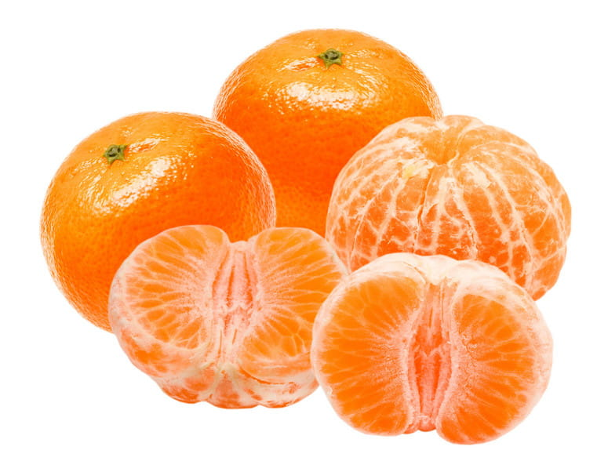

Mandarynki pochodzą z Chin, skąd na początku XIX wieku zostały sprowadzone do Europy. Główni producenci: Hiszpania, Maroko, Turcja. Uprawia się je również w Abchazji i Gruzji, w południowej Francji, Japonii, Indochinach. Mandarynka to owoc wiecznie zielonej rośliny. Jasna skórka pomarańczy ma bogaty cytrusowy zapach. Wewnątrz płód dzieli się na plastry.s krzyżuje się je z wieloma owocami cytrusowymi, tworząc ciekawe hybrydy. To prawda, że rzadko można je znaleźć w sklepie – hybryda z pomarańczą – tangor, z grejpfrutem – mineolą i innymi.